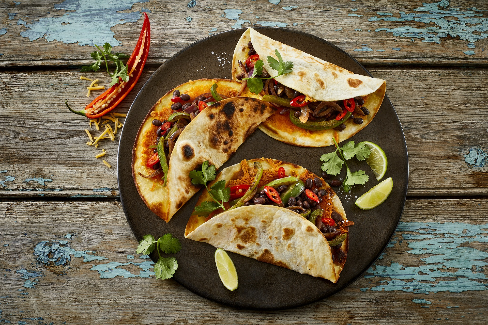

Tacos

Description
Tacos are a traditional Mexican dish consisting of a soft or crispy tortilla filled with various ingredients. Common fillings include seasoned meat such as beef, chicken, or pork, along with vegetables like lettuce, tomatoes, onions, and sometimes beans. Tacos are often topped with cheese, salsa, guacamole, or sour cream for added flavor. The tortilla, usually made from corn or flour, is folded around the fillings, creating a handheld meal. Tacos are versatile, allowing for endless combinations of flavors, and are a popular street food known for their bold taste and simplicity.
Ingredients
- Tortillas (corn or flour)
- Meat (ground beef, chicken, pork, or fish)
- Vegetables (lettuce, tomatoes, onions)
- Cheese (shredded)
- Salsa (or pico de gallo)
- Guacamole (optional)
- Sour cream (optional)
- Cilantro (optional)
- Taco seasoning (for flavoring the meat)
- Lime wedges (for garnish)
Steps
- Cook the meat in a pan until browned, then add taco seasoning and simmer
- Chop vegetables like lettuce, tomatoes, and onions for toppings
- Warm the tortillas in a skillet or microwave until soft
- Place cooked meat in the center of each tortilla
- Add toppings such as vegetables, cheese, salsa, and other desired ingredients.
- Garnish with cilantro and lime wedges, then serve and enjoy.